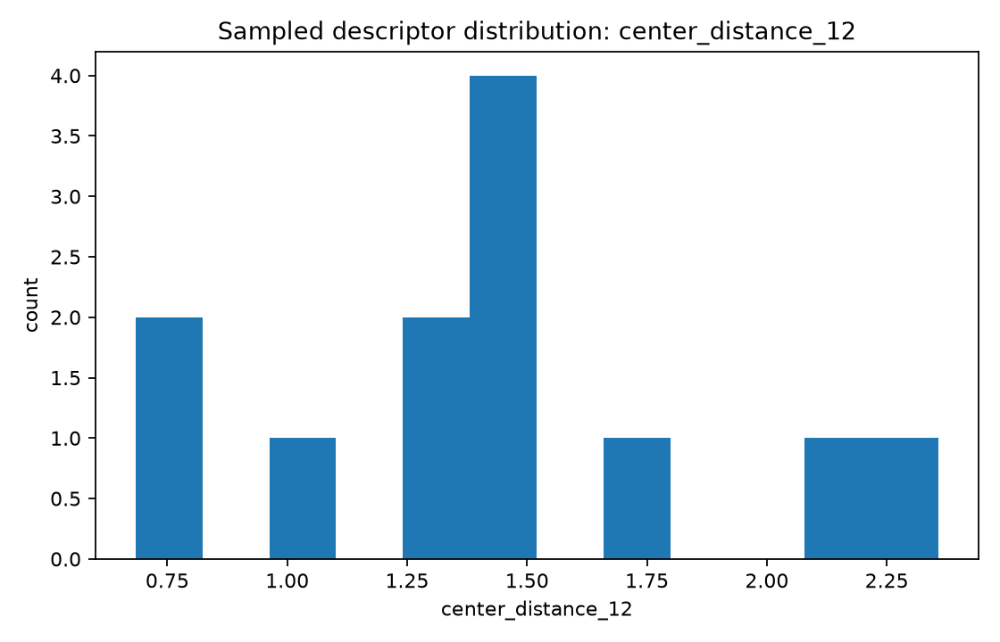
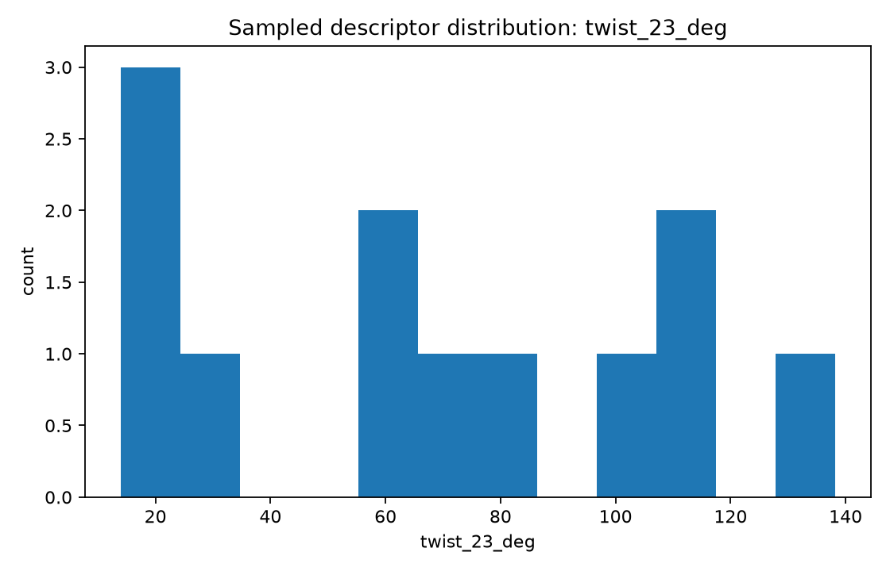
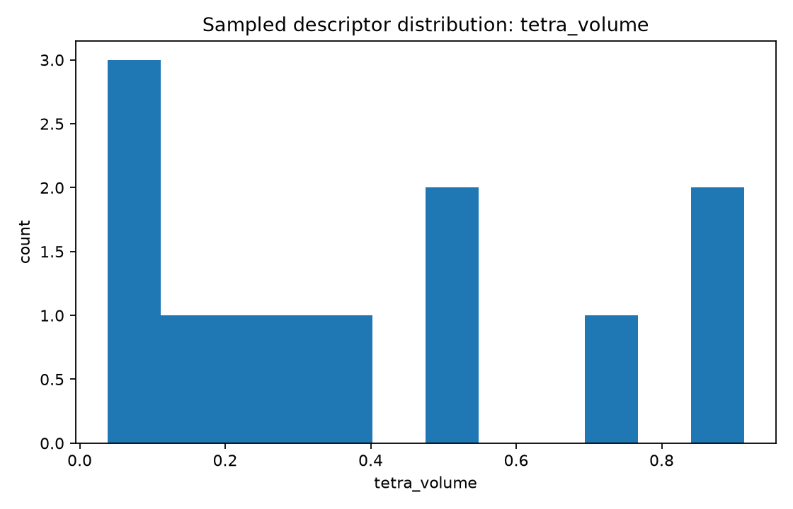

Focus: list a broad parameter inventory, generate initial synthetic geometry instances, and graph several descriptor distributions.
Total samples: 12
center_distance_12 — Normalized adjacent joint-center distance L12/Lrefcenter_distance_23 — Normalized adjacent joint-center distance L23/Lrefcenter_distance_34 — Normalized adjacent joint-center distance L34/Lreftwist_12_deg — Angle between consecutive axes near joints 1 and 2twist_23_deg — Angle between consecutive axes near joints 2 and 3twist_34_deg — Angle between consecutive axes near joints 3 and 4common_normal_13 — Shortest separation between selected nonadjacent axes 1 and 3common_normal_24 — Shortest separation between selected nonadjacent axes 2 and 4offset_1 — Signed offset along axis 1 to a common-normal constructionoffset_2 — Signed offset along axis 2 to a common-normal constructionaxis_to_center_1 — Distance from selected revolute axis 1 to an opposite joint centeraxis_to_center_2 — Distance from selected revolute axis 2 to an opposite joint centertetra_volume — Signed normalized tetrahedral volume built from four reference pointscoplanarity_residual — Near-zero indicates nearly planar center geometrychirality — Right- or left-handed center geometry flaghas_intersection_pair — Boolean flag for exact pairwise axis intersectionhas_mirror_symmetry — Boolean flag for mirror-symmetric construction


| Sample | Family | Seed | L12 | L23 | twist23 | tetra volume |
|---|---|---|---|---|---|---|
| uuur_000 | UUUR | 9587378 | 0.999 | 0.851 | 24.2 | 0.038 |
| uuur_001 | UUUR | 4327934 | 2.358 | 2.339 | 80.3 | 0.913 |
| uuru_000 | UURU | 3239680 | 1.480 | 1.728 | 105.1 | 0.893 |
| uuru_001 | UURU | 3824339 | 1.755 | 1.838 | 138.2 | 0.529 |
| uruu_000 | URUU | 786770 | 1.294 | 2.047 | 18.8 | 0.314 |
| uruu_001 | URUU | 1034363 | 1.328 | 0.606 | 60.4 | 0.100 |
| usrr_000 | USRR | 2492346 | 2.090 | 1.246 | 13.9 | 0.209 |
| usrr_001 | USRR | 2801858 | 0.683 | 0.960 | 111.5 | 0.061 |
| ursr_000 | URSR | 7347430 | 1.447 | 2.111 | 116.6 | 0.502 |
| ursr_001 | URSR | 569278 | 1.488 | 1.624 | 56.6 | 0.712 |
| urrs_000 | URRS | 8041345 | 1.476 | 2.043 | 28.2 | 0.341 |
| urrs_001 | URRS | 6782793 | 0.813 | 0.911 | 70.3 | 0.114 |
| Criterion | Sample | Family | L12 | twist23 | tetra volume |
|---|---|---|---|---|---|
| min center_distance_12 | usrr_001 | USRR | 0.683 | 111.5 | 0.061 |
| max center_distance_12 | uuur_001 | UUUR | 2.358 | 80.3 | 0.913 |
| min twist_23_deg | usrr_000 | USRR | 2.090 | 13.9 | 0.209 |
| max twist_23_deg | uuru_001 | UURU | 1.755 | 138.2 | 0.529 |
| min tetra_volume | uuur_000 | UUUR | 0.999 | 24.2 | 0.038 |
| max tetra_volume | uuur_001 | UUUR | 2.358 | 80.3 | 0.913 |